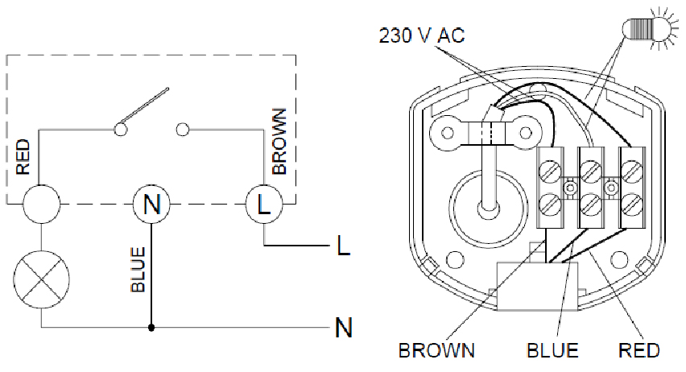

This troubleshooting procedure applies in case of Motion Detector failure. The Motion Detector picks
invisible infrared emissions coming from people and other heat sources without
emitting any type of radiation, so proper adjustement is required.
- 1
- Technical support team
- Electric
- 10
- Standard toolbox tower
- Step ladder (4 steps)
-
Note: Wall-mounted: in
its detection area, avoid the presence of highly reflective
surfaces(liquids, marble, etc.), elements subject to abrupt changes of
temperature (heating,air conditioning) or light sources.
-
Check that the Motion Detector is
directed to the desired detection area and nothing is obstructing its field
of detection.
-
Check that the lens of the Motion
Detector is not dirty or covered.
-
Readjust the Motion Detector by
rotating the Lux and Time selectors, located in the lower part of the equipment.
-
Remove the connection base cover with a Flat screwdriver, small and check that
the cables are properly inserted and that the screws are tighten.
Figure 1. Motion
Detector
